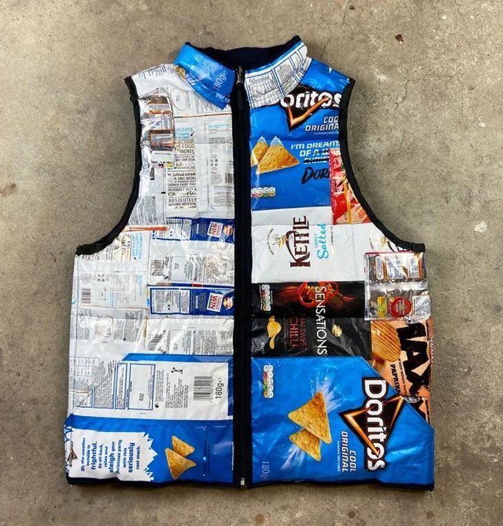

♻️ EcoCycle • 3R
Mengubah bungkus makanan bekas menjadi karya kreatif yang unik, menarik, dan memiliki nilai guna.
Jelajahi Produk
KENALI PRODUK KAMI
Produk ini berupa rompi yang dibuat dari bungkus makanan ringan bekas, seperti bungkus keripik. Bungkus dibersihkan, disusun, kemudian disatukan menggunakan teknik jahit atau bahan perekat yang sesuai. Bagian tepi diberi pelapis agar terlihat rapi. Produk ini menunjukkan bahwa kemasan plastik yang sulit terurai dapat dimanfaatkan kembali menjadi karya kreatif dan aksesori fesyen.
PERSIAPAN PEMBUATAN
PROSES PEMBUATAN
Kumpulkan bungkus makanan ringan bekas yang bersih dan tidak rusak.
Cuci jika diperlukan, lalu keringkan seluruh bungkus.
Siapkan pola rompi dari kertas sesuai ukuran yang diinginkan.
Gunting bungkus menjadi lembaran atau potongan sesuai pola.
Susun potongan bungkus dengan kombinasi warna dan motif menarik.
Satukan potongan menggunakan jahitan atau teknik penyambungan yang sesuai.
Bentuk bagian depan, belakang, dan lubang lengan berdasarkan pola.
Tambahkan kain pelapis agar rompi lebih nyaman dan kuat.
Pasang ritsleting atau pengait jika diperlukan.
Rapikan tepi rompi dan periksa kekuatan sambungannya.
PERENCANAAN PRODUK
| No. | Alat dan Bahan | Estimasi Biaya |
|---|---|---|
| 1 | Bungkus makanan bekas | Rp0 |
| 2 | Kain pelapis bekas | Rp15.000 |
| 3 | Benang jahit | Rp5.000 |
| 4 | Ritsleting | Rp5.000 |
| 5 | Pita atau kain untuk tepi | Rp10.000 |
| Total Biaya | Rp35.000 | |
MODAL PEMBUATAN
HARGA JUAL
PERKIRAAN LABA
Rp55.000 − Rp35.000 = Rp20.000